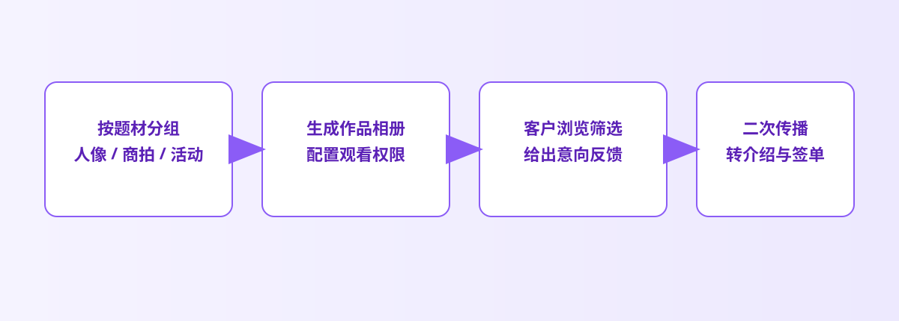

项目路径
先按项目收口，再把入口递出去
摄影作品集最怕把不同项目、不同阶段的图混在同一次发送里。先聚成一个项目入口，再发给客户或合作方，对方会更容易理解你想他先看什么。

摄影作品集经常有个隐藏问题：作品本身很好，但分享方式太像临时发图。链接太多、消息太碎、正式项目和预览样张混在一起，客户往往还没看内容，就先被入口劝退了。更好的做法，是让作品入口本身也有秩序感。
商业摄影师、人像摄影师、工作室，以及需要把精选项目发给客户或合作方的人。
轻量项目集、客户预览页、精选案例、活动回顾，而不是超大图库长期管理。
因为客户首先接触到的不是你的作品本身，而是“作品是怎么被递到他面前的”。
对摄影作品集来说，真正拉开专业感的不是“功能多”，而是入口干净、浏览顺手、预览边界明确。
提示：下面的流程图和配图都可以点击放大，细节会更清楚。
摄影作品集最怕把不同项目、不同阶段的图混在同一次发送里。先聚成一个项目入口，再发给客户或合作方，对方会更容易理解你想他先看什么。


有些作品只想给客户先看一轮，有些项目沟通结束后就不想继续开放。这时，次数、时效和失效能力就很重要，因为它决定你的作品是“继续流转”，还是“阶段性展示”。
这张展示图值得放在前面，是因为它传达了一件很重要的事：作品、入口和控制不是分裂的三件事，而是同一份项目体验。对客户来说，这种完整感会直接影响专业印象。


如果一组客户预览图长期在外面，既不利于项目节奏，也不利于作品管理。把开放范围掌握在自己手里，作品入口才会显得更稳。
在这里，你拿到链接和二维码，接下来无论是发给客户、合作方还是团队内部，都围绕同一个项目入口展开。


这一步的意义，不是把作品“锁起来”，而是让你能把不同阶段的展示边界区分清楚。这样客户收到的内容更清楚，你自己的项目管理也更轻松。
摄影作品集的专业感，不只来自作品本身，也来自它被递给客户时有没有秩序、有没有边界、有没有完成度。